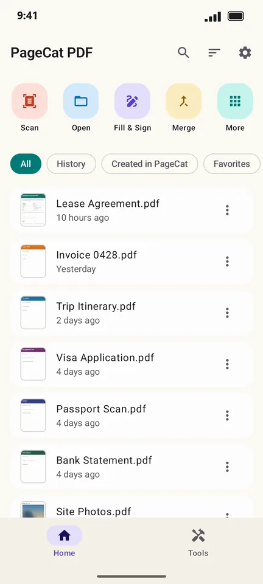
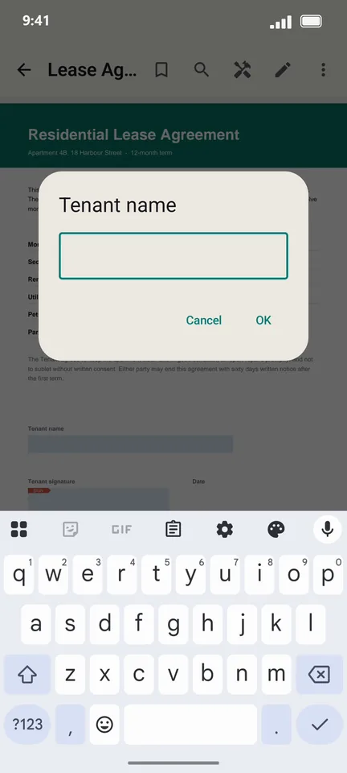
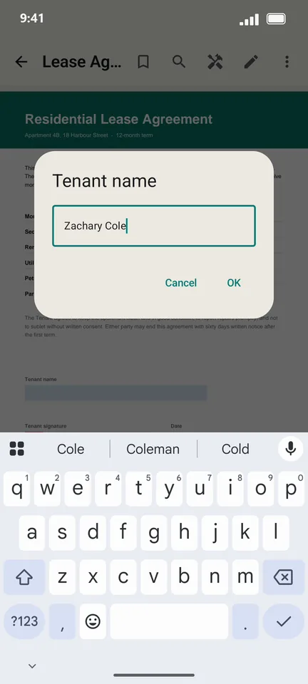
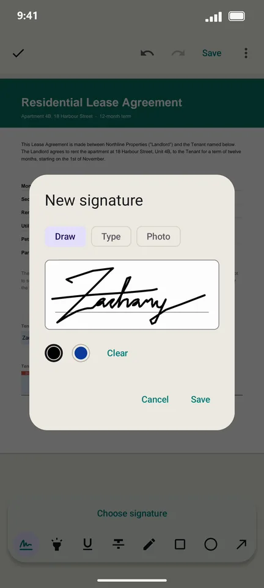
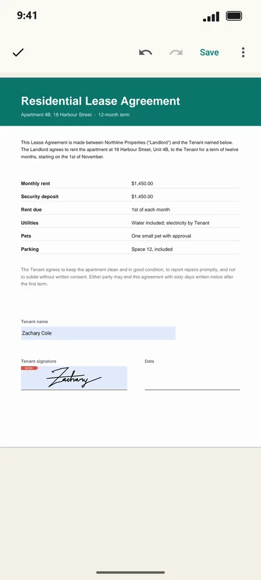
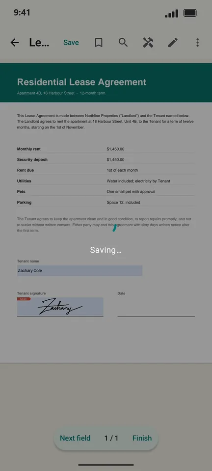

How to sign a PDF on your Android phone
Someone sent you a lease, a permission slip or a contract to sign. You do not need a printer or a scanner: with PageCat you type into the form, draw your signature on the screen and send the signed PDF straight back.
Steps
Open PageCat and tap Fill & Sign on the Home screen.

Pick the PDF you need to sign. PageCat opens it and jumps to the first form field.

Type your answer (here, the tenant name) and tap OK.

Tap Next field to reach the signature box, then draw your signature with your finger and tap Save.

Check the page. Your signature sits in the box, sized to fit.

Tap Finish to save the signed PDF and share it by email, chat or any app.

Good to know
- Your signature is saved on the phone, so next time you place it with one tap. You can also type it or use a photo of it.
- No form fields? Open the PDF, tap the pen icon, choose Sign and tap where the signature should go.
- Finish flattens the form, so the answers and the signature become part of the page and cannot be changed by the next person.
Questions
Is signing a PDF on PageCat free?
Yes. Every tool in PageCat is free. The app shows ads; there is no subscription and no account.
Is a drawn signature legally binding?
In many countries an electronic signature drawn on a document is accepted for everyday agreements such as leases and forms. For contracts with special rules, check what the other party or your local law requires.
Does my document get uploaded?
No. The PDF is filled and signed on your phone. Nothing is sent anywhere unless you share it yourself.